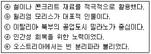
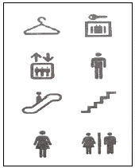
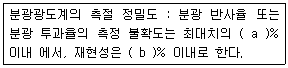
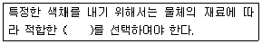

컬러리스트산업기사 (2017-08-26 기출문제)
1과목: 색채심리
1. 적도 부근의 풍부한 태양광선에 의해 라틴계 사람들 눈의 망막 중심에는 강렬한 색소가 형성되어 있다. 그로 인해 그들이 공통적으로 선호하는 색은?
- 빨강
- 파랑
- 초록
- 보라
(정답률: 92%)

2. 한국의 전통 오방색, 종교적이며 신비주의적인 상징색 등은 프랑크.H만케의 색경험 6단계 중 어느 단계에 해당이 되는가?
- 1단계 -색자극에 대한 생물학적 반응
- 2단계 -집단 무의식
- 3단계 -의식적 상징화
- 4단계 -문화적 영향과 매너리즘
(정답률: 68%)
3. 컬러 이미지 스케일에 대한 설명으로 틀린 것은?
- 색채이미지를 어휘로 표현하여 좌표계를 구성한 것이다.
- 유행색 경향 및 선호도 비교분석에 사용된다.
- 색채의 3속성을 체계적으로 이미지화한 것이다.
- 색채가 주는 느낌, 정서를 언어스케일로 나타낸 것이다.
(정답률: 45%)
4. 각 지역의 색채기호에 관한 내용 중 옳은 것은?
- 중국에서는 청색이 행운과 행복 존엄을 의미한다.
- 이슬람교도들은 녹색을 종교적인 색채로 좋아한다.
- 아프리카 토착민들은 일반적으로 강렬한 난색만을 좋아한다.
- 북유럽에서는 난색계의 연한 색상을 좋아한다.
(정답률: 76%)
5. 색채의 심리적 의미의 연결이 틀린 것은?
- 난색-양
- 한색-음
- 난색 -흥분감
- 한색 -용맹
(정답률: 90%)
6. 다음 중 컬러 피라미드 테스트의 색채 의미와 거리가 먼 것은?
- 빨강 : 충동적인 감정을 일으키는 색이다.
- 녹색 : 외향적인 색으로 정서적 욕구가 강하고 그것을 밖으로 쉽게 표현하는 사람이 많이 사용한다.
- 보라 : 불안과 긴장의 지표로 사용량이 많은 경우에는 적은 불량과 미성숙을 나타낸다.
- 파랑 : 감정통제의 색으로 진정효과가 있다.
(정답률: 80%)
7. 색채의 지각과 감정효과에 대한 설명이 틀린 것은?
- 백열램프 조명의 공간은 따뜻한 느낌을 준다.
- 보라색은 실제보다 더 가까이 보인다.
- 노란색 옷을 입으면 실제보다 더 팽창되어 보인다.
- 좁은 방을 연한 청색 벽지로 도배를 하면 방이 넓어 보인다.
(정답률: 81%)
8. 색채와 촉감에대한 설명중 틀린것은?
- 어둡고 채도가 낮은 색채는 강하고 딱딱한 느낌이다.
- 밝은 핑크, 밝은 노랑은 부드러운 느낌이다.
- 난색계열의 색은 건조한 느낌이다.
- 광택이 없으면 매끈한 느낌을 줄 수 있다.
(정답률: 77%)
9. 선호색에 대한 설명이 옳은 것은?
- 북구계 민족은 한색계를 선호한다.
- 생후 3개월부터 원색을 구별할 수 있다.
- 라틴계 민족은 중성색과 무채색을 선호한다.
- 광택이 없으면 매끈한 느낌을 줄 수 있다.
(정답률: 88%)
10. 마케팅 개념의 변천 단계로 옳은 것은?
- 제품지향 → 생산지향 → 판매지향 → 소비자지향 → 사회지향마케팅
- 제품지향 → 판매지향 → 생산지향 → 소비자지향 → 사회지향마케팅
- 생산지향 → 제품지향 → 판매지향 → 소비자지향 → 사회지향마케팅
- 판매지향 → 생산지향 → 제품지향 → 소비자지향 → 사회지향마케팅
(정답률: 40%)
11. 색채 조사 방법 중에서 디자인과 관련된 이미지어들을 추울한 다음, 한 쌍의 대조적인 형용사를 양 끝에 두고 조사하는 방법은?
- 리커트 척도법
- 의미 미분법
- 심층 면접법
- 좌표 분석법
(정답률: 52%)
12. 다음 중색채조절에 관한설명 중가장 올바른것은?
- 시각 작업 시 명시도를 높이는 것이다.
- 환경, 안전, 작업능률을 높이기 위한 색채계획이다.
- 디자인 작품의 인쇄제작에 쓰이는 말이다.
- 색상이 아름답게 보이도록 적절히 혼합하는 것이다.
(정답률: 62%)
13. 색채조절을 통해 이루어지는 효과가 아닌 것은?
- 신체의 피로, 특히 눈의 피로를 막는다.
- 안전이 유지되며 사고가 줄어든다.
- 색채의 적용으로 주위가 산만해질 수 있다.
- 정리정돈가 질서있는 분위기가 연출된다.
(정답률: 92%)
14. 색자극에 대한 반응을 연구한 학자들의 견해가 틀린 것은?
- 파버 비렌(Faber Biren) : 빨간색은 분위기를 활기차게 돋궈주고, 파란색은 차분하게 가라 앉히는 경향이 있다.
- 웰즈(N.A.Wells) : 자극적인 색채는 진한 주황 -주홍 -노랑 -주황의 순서이고, 마음을 가장 안정시키는 색은 파랑 -보라의 순서이다.
- 로버트 로스(Rober R. Ross) : 색채를 극적인 효과 및 극적인 감동과 관련시켜 회색, 파랑, 자주는 비극과 어울리는 색이고, 빨강, 노랑 등은 희극과 어울리는 색이다.
- 하몬(D.B.Harmon) : 근육의 활동은 밝은 빛 속에서 또는 주위가 밝은 색일 때 더 활발해지고, 정신적 활동의 작업은 작업은 조명의 밝기를 충분히 하되, 주위 환경은 부드럽고 진한 색으로 하는 편이 좋다.
(정답률: 54%)
15. 올림픽의 오륜마크에 사용된 상징색이 아닌 것은?
- 빨강
- 검정
- 녹색
- 하양
(정답률: 85%)
16. 동서양의 문화에 따른 색채 정보의 활용이 옳게 연결된 것은?
- 동양의 신성시되는 종교색 -노랑
- 중국의 왕권을 대표하는 색 -빨강
- 봄과 생명의 탄색 -파랑
- 평화, 진실, 협동 -녹색
(정답률: 59%)
17. 상쾌하고 맑은 이미지를 연상시키는 색채의 톤(tone)은?
- pale
- light
- deep
- soft
(정답률: 80%)
18. 소비자 구매심리의 과정이 옳게 배열된 것은?
- 주의→ 관심→ 욕구→ 기억→ 행동
- 주의→ 욕구→ 관심→ 기억→ 행동
- 관심 →주의 →기억 →욕구 →행동
- 관심 →기억 →주의 →욕구 →행동
(정답률: 47%)
19. 안전색 표시사항 중 초록의 일반적인 의미에 해당되는 것은?
- 안전 / 진행
- 지시
- 금지
- 경고 / 주의
(정답률: 90%)
20. 색채의 연상에관한 설명중 틀린것은?
- 색채의 연상에는 구체적 연상과 추상적 연상이 있다.
- 색채의 연상은 경험적이기 때문에 기억색과 밀접한 관련을 갖는다.
- 색채의 연상은 경험과 연령에 따라서 변화하지 않는다.
- 색채의 연상은 생활양식이나 문화적인 배경, 그리고 지역과 풍토 등에 따라서 개인차가 있다.
(정답률: 93%)
2과목: 색채디자인
21. 환경색채디자인의 프로세스 중 대상물이 위치한 지역의 이미지를 예측 설정하는 단계는?
- 환경요인분석
- 색채이미지추출
- 색채계획목표설정
- 배색설정
(정답률: 30%)
22. 서로 관련 없는 요소들 간의 결합을 의미하는 그리스어에서 유래한 것으로, 문제를 보는 관점을 완전히 달리하여 여기서 연상되는 점과 관련성을 찾아 아이디어를 발상하는 방법은?
- 시네틱스(synectics)법
- 체크리스트(checklist)법
- 마인드 맵(mind map)법
- 브레인스토밍(brainstorming)법
(정답률: 75%)
23. 빅터 파파넥의 복합기능에 대한 설명으로 가장 부적합한 것은?
- 형태와 기능을 분리시키지 않고 좀 더 포괄적인 의미에서의기능을 복합기능이라고 규정지었다.
- 복합기능에는 방법(Method), 용도(Use), 필요성(Need)과 같합리적 요소들이 포함된다.
- 복합기능에는 연상(Association), 미학(Aesthetics)과 같은감성적 요소들은 포함되지 않는다.
- 특수한 목적을 달성하기 위한 자연과 사회에 대한 의도적인실용화를 의미하는 것이 텔레시스(Telesis)이다.
(정답률: 77%)
24. 우수한 미적기준을 표준화하여 대량생산하고 질을 향상시켜디자인의 근대화를 추구한 사조는?
- 미술공예운동
- 아르누보
- 독일공작연맹
- 다다이즘
(정답률: 70%)
25. 일반적인 디자인 분류 중 2차원 디자인만 나열한 것은?
- TV 디자인, CF 디자인, 애니메이션디자인
- 그래픽디자인, 심벌디자인, 타이포그래피
- 액세서리디자인, 공예디자인, 인테리어디자인
- 익스테리어디자인, 웹디자인, 무대디자인
(정답률: 89%)
26. 몬드리안을 중심으로 한 신조형주의 운동으로 개성을 배제하는 주지주의적 추상 미술운동이며, 색채의 선택은 검정, 회색, 하양과 작은 면적의 빨강, 노랑, 파랑의 순수한 원색으로 표현한 디자인 사조는?
- 큐비즘
- 데스틸
- 바우하우스
- 아르데코
(정답률: 67%)
27. 합리적인 디자인에 대한 설명 중 틀린 것은?
- 이상적인 디자인을 추구하되 실현 가능한 것이어야 한다.
- 개인적인 성향에 맞추기 위해 기계적인 생산 활동을 추구한다.
- 미적조형과 기능, 실용성 사이에서 균형을 이루어야 한다.
- 소비자의 요구사항과 디자이너로서의 전문적인 의견을 적절히 조율해야 한다.
(정답률: 94%)
28. 러시아 혁명기의 대표적인 아방가르드 운동의 하나로 현대의 기술적 원리에 따라 실제 생산물을 생산하는 것을 목표로 한 것은?
- 기능주의
- 구성주의
- 미래파
- 바우하우스
(정답률: 45%)
29. 다음 중 아르누보에 대한 설명으로 옳은 것만 고른 것은?

- ⓐ , ⓒ
- ⓐ , ⓔ
- ⓑ , ⓓ
- ⓓ , ⓔ
(정답률: 47%)
30. 인간생활의 질적 수준을 향상시키기 위하여 형식미와 기능 그 자체와 유기적으로 결합된 형태, 색채, 아름다움을 나타내고자 할 때 필요한 디자인 요건은?
- 심미성
- 독창성
- 경제성
- 문화성
(정답률: 90%)
31. 미용 디자인에서 입술에 사용하는 색의 설명으로 틀린것은?
- 메탈릭 페일(metalic pale) 색조는 은은하고 섬세하여 로맨틱한 분위기를 연출할 수 있다.
- 의상의 색과 공통된 요소를 지닌 립스틱 색을 사용함으로써 통일감과 조화를 줄 수 있다.
- 치아가 희지 않을 때는 파스텔 톤같은 밝은 색을 사용하는 것이 좋다.
- 따뜻한 오렌지나 레드계의 색을 사용하면 명랑하고 활달한 분위기가 연출된다.
(정답률: 77%)
32. 색채 사용에 관한 일반적인 원칙과 효과에 대한 설명이 가장 합리적인 것은?
- 초등학교 저학년 학생들을 위한 학습공간에는 청색과 같은 한색을 사용하면 차분한 분위기가 연출되어 학습효과를 높일 수 있다.
- 학교의 식당은 복숭아색과 같은 밝은 난색을 사용하면 즐거운 분위기가 연출되어 식욕을 돋궈 준다.
- 학교의 도서실과 교무실은 노란 느낌의 장미색을 사용하면 두뇌의 활동을 활발하게 만들어 업무의 능률이 올라간다.
- 학습하는 교실의 정면 벽은 진한(deep)색조나 밝은(light) 색조를 사용하면 색다른 공간감을 연출하여 집중력을 높일 수있다.
(정답률: 63%)
33. 디자인의 원리에 대한 설명으로 틀린 것은?

- Symbol
- Pictogram
- Sign
- ISOTYPE
(정답률: 58%)
34. 작가의 사상의 연결이 잘못된 것은?
- 빅토르 바자렐리(V. Vasarely) -옵아트
- 카사밀 말레비치(K. Malevich) -구성주의
- 피에트 몬드리안(P. Mondrian) -신조형주의
- 에트레 솟사스(E. J. Sottsass) -팝아트
(정답률: 64%)
35. 색채심리를 이용한 실내 색채 계획의 적용이 적합하지 않은 것은?
- 남향, 서향 방의 환경색으로 한색 계통의 색을 적용하였다.
- 지나치게 낮은 천장에 밝고 차가운 색을 적용하였다.
- 천장은 밝게, 바닥은 중간 명도, 벽은 가장 어둡게 적용하여 안정감을 주었다.
- 북향, 동향 방에 오렌지 계열의 벽지를 적용하였다.
(정답률: 69%)
36. 일반적인 패션디자인의 색채계획에 필요한 내용과 먼 것은?
- 트렌드 분석을 위한 시장조사와 분석
- 상품기획의 콘셉트
- 유행색과 소비자 반응
- 개인별 감성과 기호
(정답률: 83%)
37. 색채계획을 세우기 위한 과정으로서 옳은 것은?
- 색채심리분석 → 색채환경분석 → 색채전달계획 → 디자인적용
- 색채전달계획 → 색채환경분석 → 색채심리분석 → 디자인적용
- 색채환경분석 → 색채심리분석 → 색채전달계획 → 디자인적용
- 색채환경분석 → 색채심리분석 → 색채디자인의 이해 → 디자인적용
(정답률: 72%)
38. 트렌드 컬러의 조사의 가장 중요하고 민감하며 빠른 변화주기를 보이는 디자인 분야는?
- 포장디자인
- 환경디자인
- 패션디자인
- 시각디자인
(정답률: 89%)
39. 디자인 과정에서, 사용자의 필요성에 의해 디자인을 생각해내고, 자료나 제작방법 등을 생각하여 시각화하는 과정을 무엇이라 하는가?
- 재료과정
- 조형과정
- 분석과정
- 기술과정
(정답률: 67%)
40. 형태의 구성요소와 거리가 먼 것은?
- 점
- 선
- 면
- 대비
(정답률: 91%)
3과목: 섹채관리
41. 측정에 사용하는 분광광도계의 조건 중 ( )안에 들어갈 수치로 옳은 것은?

- a:0.5, b:0.2
- a:0.3, b:0.1
- a:0.1, b:0.3
- a:0.2, b:0.5
(정답률: 46%)
42. 베지어 곡선을 이용하여 표현한 것으로 이미지가 확대되거나 축소되어도 이미지 정보가 그대로 보존되며 용량도 적은 이미지 표현 방식은?
- 벡터 방식 이미지 (vector image)
- 래스터 방식 이미지 (raster image)
- 픽셀 방식 이미지 (pixel image)
- 비트맵 방식 이미지 (bitmap image)
(정답률: 71%)
43. 천연 염료와 색이 잘못 짝지어진 것은?
- 자초 -자색
- 치자 -황색
- 오배자 -적색
- 소목 -녹색
(정답률: 50%)
44. 색채측정기의 종류를 크게 두 가지로 나눈다면 어떤 것이 있는가?
- 필터식 색채계와 망점식 색채계
- 분광식 색채계와 렌즈식 색채계
- 필터식 색채계와 분광식 색채계
- 음이온 색채계와 분사식 색채계
(정답률: 92%)
45. 빛을 전하로 변환하는 스캐너 부속 광학 칩 장비장치는?
- CCD (Charge Coupled Device)
- PPI (Pixel Per Inch)
- CEPS (Color Electronic Prepress System)
- OCR (Optical Character Recognition)
(정답률: 72%)
46. 색온도 보정 필터에 대한 설명 중 틀린 것은?
- 색온도 보정 필터에는 색온도를 내리는 블루계와 색온도를 올리는 엠버계가 있다.
- 필터 중 흐린 날씨용, 응달용을 엠저계라고 한다.
- 필터 중 아침저녁용, 사진전구용, 섬광 전구용을 블루계라고 한다.
- 필터는 사용하는 필름과 촬영하는 광원의 색온도에 따라 구분해서 사용한다.
(정답률: 37%)
47. 동일 조건으로 조명할 때, 한정된 동일 입체각 내의 물체에서 반사하는 복사속(광속)과 완전 확산 반사면에서 반사하는 복사손(광속)의 비율은?
- 입체각 휘도율
- 방사 휘도율
- 방사 반사율
- 입체각 반사율
(정답률: 64%)
48. 다음 중 태양광 아래에서 가장 반사율이 높은 경우의 무명은?
- 천연 무명에 전혀 처리를 하지 않은 무명
- 화학적 탈색 처리한 무명
- 화학적 탈색 후 푸른색 염료로 약간 염색한 무명
- 화학적 탈색 후 형광성 표백제로 처리한 무명
(정답률: 76%)
49. 색온도에 관한 설명 중 틀린 것은?
- 광원의 색온도는 시각적으로 같은 색상을 나타내는 이상적인 흑체(ideal blackbody radiator)의 절대온도(K)를 사용한다.
- 모든 광원의 색이 이상적인 흑체의 발광색과 일치하지 않을 수 있으므로 색온도가 정확한 광원색을 나타내지는 못한다.
- 정확한 색 평가를 위해서는 5000k . 6500K의 광원이 권장된다.
- 그래픽 인쇄물의 정확한 색 평가를 위해 권장되는 조명의 색온도는 6500K이다.
(정답률: 31%)
50. 다음 중 안료를 사용하여 발색하는 것이 아닌 것은?
- 플라스틱
- 유성 페인트
- 직물
- 고무
(정답률: 66%)
51. 옻, 캐슈계 도료, 유성페인트, 유성에나멜, 주정도료 등이 속하는 것은?
- 천연수지도료
- 합성수지도료
- 수성도료
- 인쇄잉크
(정답률: 53%)
52. 디지털 영상장치의 생산업체들이 모여 디지털 영상의 호환성을 확보하기 위하여 표준을 정하는 국제적인 단체는?
- CIE (국제조명위원회)
- ISO (국제표준기구)
- ICC (국제색채협의회)
- AIC (국제색채학회)
(정답률: 41%)
53. 육안으로 색을 비교할 경우 조건등색검사기 등을 이용한 검사를 권장하는 연령의 관찰자는?
- 20대 이상
- 30대 이상
- 40대 이상
- 무관함
(정답률: 43%)
54. 다음 ( )안에 들어갈 용어는?

- Colorant
- color gamut
- primary colors
- CMS
(정답률: 57%)
55. 다음 중 프린터에 사용되는 컬러 잉크의 색이름이 아닌것은?
- red
- magenta
- cyan
- yellow
(정답률: 87%)
56. 조명방식에 대한 설명으로 틀린 것은?
- 간접 조명은 효율은 나쁘지만 차분한 분위기가 된다.
- 전반확산조명은 확산성 덮개를 사용하여 광원 빛이 확산되도록 하는 방식이다.
- 반직접 조명은 확산성 덮개를 사용하여 광원 빛의 10.40% 가 대상체에 직접 조사된다.
- 직접 조명은 빛이 거의 직접 작업면에 조사되는 것으로 반사갓으로 광원의 빛을 모아 비추는 방식이다.
(정답률: 63%)
57. 일반적으로 이용하는 색 비교용 부스의 내부색으로 적합한 것은?
- L*가 약 20 이하의 무광택 무채색
- L*가 약 25.35의 무광택 무채색
- L*가 약 45.55의 무광택 무채색
- L*가 약 65 이상의 무광택 무채색
(정답률: 42%)
58. 색을 지각하는 과정에서 영향을 가장 적게 미치는 요소는?
- 주변소음
- 광원의 종류
- 관측자의 건강상태
- 물체의 표면 특성
(정답률: 82%)
59. 다음 중 CCM의 이점이 아닌 것은?
- 아이소메트릭 매칭이 가능하다.
- 조색시간이 단축된다.
- 정교한 조색으로 물량이 많이 소모된다.
- 초보자라도 쉽게 배우고 조색할 수 있다.
(정답률: 79%)
60. KS A 0065(표면색의 시감비교방법)에 의한 색 비교의 절차 중 일반적인 방법에 대한 설명이 틀린 것은?
- 시료색과 현장 표준색 또는 표준재료로 만든 색과 비교한다.
- 비교하는 색은 인접되지 않도록 유의하고 계단식으로 배열되도록 배치한다.
- 비교의 정밀도를 향상시키시 위해서 가끔씩 시료색의 특정한 색채를 내기 위해서는 물체의 재료에 따라 위치를 바꿔가며 비교한다.
- 일반적인 시료색은 북창주광 또는 색 비교 부스, 어느 쪽에서 관찰해도 된다.
(정답률: 53%)
4과목: 색채지각의이해
61. 진출색이 지니는 일반적 조건에 관한 설명으로 틀린 것은?
- 유채색이 무채색보다 진출의 느낌이 크다.
- 채도가 낮은 색이 높은 색보다 진출의 느낌이 크다.
- 따뜻한 색이 차가운 색보다 진출의 느낌이 크다.
- 밝은 색이 어두운 색보다 진출의 느낌이 크다.
(정답률: 93%)
62. 다음 중 선물을 포장하려 할 때, 부피가 크게 보이려면 어떤 색의 포장지가 가장 적합한가?
- 고채도의 보라색
- 고명도의 청록색
- 고채도의 노란색
- 저채도의 빨간색
(정답률: 85%)
63. 색료의 3원색과 색광의 3원색이 옳게 연결된 것은?
- 색료의 3원색 : 빨강, 초록, 파랑 색광의 3원색 : 마젠타, 시안, 노랑
- 색료의 3원색 : 마젠타, 파랑, 검정 색광의 3원색 : 빨강, 초록, 노랑
- 색료의 3원색 : 마젠타, 시안, 초록 색광의 3원색 : 빨강, 노랑, 파랑
- 색료의 3원색 : 마젠타, 시안, 노랑 색광의 3원색 : 빨강, 초록, 파랑
(정답률: 81%)
64. 도로나 공공장소에 시인성을 높이기 위한 표지판의 배색으로 적합한 것은?
- 파란색 바탕에 흰색
- 초록색 바탕에 흰색
- 검정색 바탕에 노란색
- 흰색 바탕에 노란색
(정답률: 84%)
65. 다음 중에서 삼원색설과 거리가 먼 사람은? 혼색에 해당되는 것은?
- 토마스 영(Thomas Young)
- 헤링(Edwald Hering)
- 헬름흘쯔(Hermann Von Helmholtz)
- 맥스웰(James Clerck Maxwell)
(정답률: 48%)
66. 카메라의 렌즈에 해당하는 것으로 빛을 망막에 정확하고 깨끗하게 초점을 맺도록 자동적으로 조절하는 역할을 하는 것은?
- 모양체
- 홍채
- 수정체
- 각막
(정답률: 57%)
67. 심리보색에 대한 설명 중 틀린 것은?
- 인간의 지각과정에서 서로 반대색을 느끼는 것을 말한다.
- 헤링의 반대색설과 연관이 있다.
- 눈의 잔상현상에 따른 보색이다.
- 양성 잔상과 관련이 있다.
(정답률: 69%)
68. 병원 수술실에 연한 녹색의 타일을 깔고, 의사도 녹색의 수술복을 입는 것은 무엇을 최소화하기 위한 것인가?
- 면적대비
- 동화현상
- 정의 잔상
- 부의 잔상
(정답률: 76%)
69. 다음 중 면색(film color)을 설명하고 있는 것은?
- 순수하게 색만 있는 느낌을 주는 색
- 어느 정도의 용적을 차지하는 투명체의 색
- 흡수한 빛을 모아 두었다가 천천히 가시광선 영역으로 나타나는 색
- 나비의 날개, 금속의 마찰면에서 보여지는 색
(정답률: 69%)
70. 동시대비에 대한 설명으로 옳은 것은?
- 색차가 작을수록 대비현상이 강해진다.
- 자극과 자극 사이의 거리가 멀어질수록 대비현상은 강해진다.
- 무채색 위의 유채색은 채도가 낮아 보인다.
- 서로 인접되어 있는 부분에서는 강한 대비효과가 나타난다.
(정답률: 74%)
71. 가시광선의 파장과 색과의 관계를 순서대로 배열한 것으로 옳은 것은?(단, 단파장 -중파장 -장파장의 순)
- 주황-빨강 -보라
- 빨강-노랑 -보라
- 노랑 -보라-빨강
- 보라 -노랑-빨강
(정답률: 82%)
72. 양복과 같은 색실의 직물이나, 망점 인쇄와 같은 혼색에 해당되는 것은?
- 가법혼색
- 감법혼색
- 중간혼색
- 병치혼색
(정답률: 77%)
73. 검정색과 흰색 바탕 위에 각각 동일한 회색을 놓으면 검정바탕 위의회색이 흰색바탕 위의회색에 비해 더 밝게 보이는 것과 관련된 대비는?
- 명도대비
- 색상대비
- 보색대비
- 채도대비
(정답률: 85%)
74. 다음 중 면적대비 현상을 적용한 것은?
- 실내 벽지를 고를 때 샘플을 보고 선정하면 시공 후 다른 느낌을 받는 경우가 많아서 명도, 채도를 주의해야 한다.
- 보색대비가 너무 강하면 두 색 가운데에 무채색의 라인을 넣는다.
- 교통표지판을 만들 때 눈에 잘 띄도록 명도의 차이를 크게 한다.
- 음식점의 실내를 따뜻해보이도록 난색계열로 채색 하였다.
(정답률: 74%)
75. 감법혼색의 3원색을 모두 혼색한 결과는?
- 하양
- 검정
- 자주
- 파랑
(정답률: 84%)
76. 비눗방울 등의 표면에 있는 색으로, 보는 각도에 따라 다르게 보이는 것은 빛의 어떤 원리를 이용한 것인가?
- 간섭
- 반사
- 굴절
- 흡수
(정답률: 60%)
77. 작은 면적의 회색이 채도가 높은 유채색으로 둘러싸일 때 회색이 유채색의 보색 색상을 띠어 보이는 현상은?
- 하만그리드 현상
- 애브니 현상
- 베졸트 뷔르케 현상
- 색음 현상
(정답률: 57%)
78. 간상체와 추상체에 대한 설명 중 틀린 것은?
- 눈의 망막 중 중심와에는 간상체만 존재한다.
- 간상체는 추상체에 비하여 행상도가 떨어지지만 빛에는 더 민감하다.
- 색채시각과 관련된 광수용기는 추상체이다.
- 스펙트럼 민감도란 광수용기가 상대적으로 어떤 파장에 민감한가를 나타낸 것이다.
(정답률: 77%)
79. 하얀 바탕 종이에 빨간색 원을 놓고 얼마간 보다가 하얀 바탕 종이를 빨간색 종이로 바꾸어 놓게 되면 빨간색 원은 검정색으로 보이게 되는 것과 관련한 대비는?
- 색채대비
- 연변대비
- 동시대비
- 계시대비
(정답률: 77%)
80. 어느 특정한 색채가 주변색채의 영향을 받아 본래의 색과는 다른 색채로 지각되는 경우는?
- 혼색효과
- 강조색 배색
- 연속 배색
- 대비효과
(정답률: 49%)
5과목: 색채체계의이해
81. 먼셀의 표기방법에 대한 설명이 옳은 것은?
- 5G 5/11 : 채도 5, 명도 11을 나타내고 있으며 매우 선명한 녹색이다.
- 7.5YR 9/1 : 명도가 9로서 매우 어두운 단계이며 채도가 1단계로서 매우 탁한 색이다.
- 2.5PB 9/2 : 선명한 파랑 영역의 색이다.
- 2.5YR 4/8 : 명도 4, 채도 8을 나타내고 있으며 갈색이다.
(정답률: 58%)
82. 먼셀(Albert H. Munsell)은 색의 밝고 어두운 정도를 무엇이라 했는가?
- 광도(lightness)
- 광량도(brightness)
- 밝기(luminosity)
- 명암가치(value)
(정답률: 69%)
83. 우리나라의 전통색은 음향오행사상에서 오정색과 다섯 개의 간색인 오간색으로 대변되는 의미론적 상징 색채계에 기반을 두고 있다. 오간색을 바르게 나열한 것은?
- 적색, 청색, 황색, 백색, 흑색
- 녹색, 벽색, 홍색, 유황색, 자색
- 적색, 청색, 황색, 자색, 흑색
- 녹색, 벽색, 홍색, 황토색, 주작색
(정답률: 57%)
84. 현색계에 대한 설명으로 옳은 것은?
- CIE XYZ 표준 표색계는 대표적인 현색계이다.
- 수치로만 구성되어 색의 감각적 느낌을 나타내지 못한다.
- 색 지각의 심리적인 3속성에 의해 정량적으로 분류하여 나타낸다.
- 빛의 혼색실험에 기초를 두고 있으며 정확한 측정을 할 수 있다.
(정답률: 55%)
85. 오스트발트 색상환에 대한 설명으로 옳은 것은?
- 영,헬름흘쯔의 3원색설을 따른다.
- 전체가 20색상으로 구성되어 있다.
- 마주보는 색은 서로 심리보색관계이다.
- 먼셀 색상환과 일치한다.
(정답률: 59%)
86. 다음 중 동일색상에서 톤의 차를 강조한 배색에 해당하는 것은?
- 분홍색 + 하늘색
- 분홍색 + 남색
- 하늘색 + 남색
- 남색 + 흑갈색
(정답률: 87%)
87. 일본색채연구소가 1964년에 색채교육을 목적으로 개발한 색체계는?
- PCCS 색체계
- 먼셀 색체계
- CIE 색체계
- NCS 색체계
(정답률: 81%)
88. NCS 색체계의 설명으로 틀린 것은?
- 심리적인 비율척도를 사용해 색 지각량을 표로 나타내었다.
- 기본개념은 영.헬름흘쯔의 '색에 대한 감정의 자연적 시스템'을 채택하였다.
- 흰색성, 검은색성, 노란색성, 빨간색성, 파란색성, 녹색성의 6가지 기본 속성을 가지고 있다.
- 인테리어나 외부 환경 디자인에 적합한 색체계이다.
(정답률: 42%)
89. 계통색이름과 L*a*b* 좌표가 틀린 것은?
- 선명한 빨강 : L*=40.51, a*=66.31, b*=46.13
- 밝은 녹갈색 : L*=51.04, a*=-10.52, b*=57.29
- 어두운 청록 : L*=20.35, a*=-14.19, b*=-9.74
- 탁한 자줏빛 분홍 : L*=30.37, a*=18.02, b*=-41.95
(정답률: 40%)
90. 동일한톤의 배색은어떤 효과를낼 수있는가?
- 차분하고 정적이며 통일감의 효과를 낸다.
- 동적이고 화려하며 자극적인 효과를 낸다.
- 안정적이고 온화하며 명료한 느낌을 준다.
- 통일감과 더불어 변화와 활력 있는 느낌을 준다.
(정답률: 72%)
91. PCCS 색체계의 기본 색상 수는?
- 8색
- 12색
- 24색
- 36색
(정답률: 78%)
92. KS A 0011에서 사용하는 유채색의 수식 형용사에 속하지 않는 것은?
- soft
- dull
- strong
- dark
(정답률: 64%)
93. 한국인의 생활색채에 관한 설명으로 틀린 것은?
- 자연과 더불어 담백한 색조가 지배적이었다.
- 단청 건축물은 부의 상징이었으며, 살림집은 신분을 상징하는 색으로 채색되었다.
- 흑, 백, 적색은 재앙을 막아 주는 주술적인 의미로 색동옷 등에 상징적으로 쓰였다.
- 비색이라 불리는 청자의 색은 상징적인 색이며, 실제로는 단색으로 표현할 수 없는 회색에 가까운 자연의 색이다.
(정답률: 36%)
94. 다음 중 관용색명과 이에 대응하는 계통색 이름이 바르게 짝지어진 것은?
- 벚꽃색 -연한 분홍
- 비둘기색 -회청색
- 살구색 -흐린 노란 주황
- 레몬색 -밝은 황갈색
(정답률: 36%)
95. 지각색을 체계화하여 표시하는 방법으로 한국, 일본, 미국 등에서 표준체계로 사용되고 있는 것은?
- 먼셀 색체계
- NCS 색체계
- PCCS 색체계
- 오스트발트 색체계
(정답률: 73%)
96. 셰브럴(M.E.Chevreul)의 조화원리에 해당하지 않는 것은?
- 두 색이부조화일 때그 사이에백색 또는흑색을 더하여 조화를 이룬다.
- 여러 가지색들 가운데한 가지의색이 주조를이룰 때 조화된다.
- 색을 회전 혼색시켰을 때 중성색이 되는 배색은 조화를 이룬다.
- 같은 색상에서 명도의 차이를 크게 배색하면 조화를 이룬다.
(정답률: 39%)
97. 국제적인 표준이 되는 색체계로 묶인 것은?
- Munsell, RAL, L*a*b* system
- L*a*b*, Yxy, NCS system
- DIC, Yxy, ISCC-NIST system
- L*a*b*, ISCC-NIST, PANTONE system
(정답률: 59%)
98. 먼셀의 색입체를 수직으로 자른 단면의 설명으로 옳은 것은?
- 대칭인 마름모 모양이다.
- 명도가 높은 어두운 색이 상부에 위치한다.
- 보색관계의 색상면을 볼 수 있다.
- 등명도면이 나타난다.
(정답률: 58%)
99. 다음 중 혼색계의 색체계는?
- XYZ 색체계
- NCS 색체계
- DIN 색체계
- Munsell 색체계
(정답률: 67%)
100. 배색을 할때 가장큰 면적을차지하고 주된이미지를 나타내는 색은?
- 주조색
- 강조색
- 보조색
- 바탕색
(정답률: 84%)